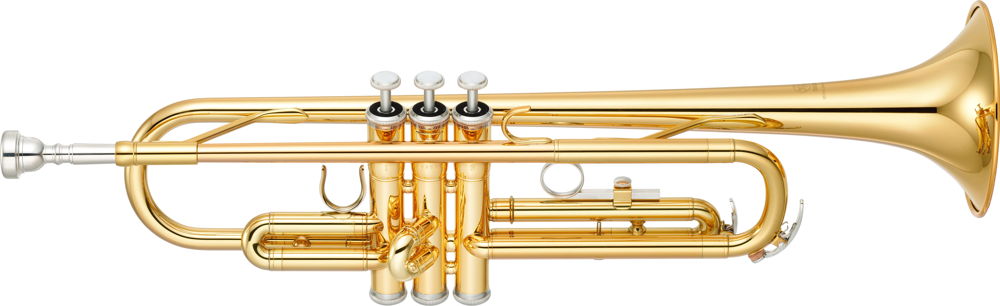

Hilary Hahn is a world-class, three-time Grammy Award-winning violinist that is renowned for her clear and brilliant musicality, expansive interpretations of an incredibly varied repertoire, and organic connections with her audience. She started playing the violin when she was three years old and has dedicated a majority of her life towards the furthering of her musical experience. She joined the Suzuki program,an internationally known music curriculum and teaching philosophy dating from the mid-20th century, until age five. After this, she studied under the tutelage of Jascha Brodsky at the Curtis Institute of Music in Philadelphia from age 10 to 17. By the age of 16, she had met her university requirements and from 17 to 19, she was coached with Jaime Laredo, Gary Graffman and Felix Galimir. Since then, she's continued to have occasional coachings and learn constantly from colleagues.
She has a particular love for a composer named Bach and made her 1997 debut recording entitle "Hilary Hahn Plays Bach" with some of his violin sonatas and partitas. In addtion to playing traditional violin literature with amazing beauty and grace, she often goes against the grains of some traditional conventions. Her latest commission, her first for solo violin and her first of a set of works from a single composer, is six partitas by Antón García Abril, which she premiered in the United States, Europe and Japan. García Abril was also one of the composers for In 27 Pieces: the Hilary Hahn Encores, Hahn’s multi-year commissioning project to bing back life to the duo encore genre. She has an amazing ability to connect with her fans shown by her massive social media presence such as her art projects and her YouTube interview series, to her violin case’s comments on life with a concert violinist on Twitter and Instagram

Born in Atami, a seaside town close to Tokyo, Uchida moved to Austria when she was 12 years old with her diplomat parents. She gave her first Viennese recital at the age of 14 at the Vienna Musikverein. She enrolled at the Vienna Academy of Music to study with Richard Hauser and later, Wilhem Kempff and Stefan Askenase. In 1969, Uchida won the first place in the Beethoven Competition in Vienna and in 1970 the second place in the International Chopin Piano Competition. In 1975, she won second place in the Leeds Piano Competition.
Mitsuko Uchida brings a deep insight into the music she plays through her own quest for truth and beauty. Known for her interpretations of Mozart, Schubert, Schumann and Beethoven, she has also illuminated the music of Berg, Schoenberg, Webern and Boulez for a new generation of listeners. She is very passionate about the upringing and development of young musicians and is a trustee of the Borletti-Buitoni Trust and Director of the Marlboro Music Festival. Some of the major venues she has played at were the the Royal Festival Hall, Carnegie Hall, the Berlin Philharmonie and the Vienna Musikverein.

Though he started out playing drums in the fourth grade growing up in Chicago's South Side, it was when he took up the trumpet that Marquis Hill really found his niche. He attended high school at Kenwood Academy, excelling in its revered jazz–performance program, and was mentored by Bobby Broom, Willie Pickens, Tito Carrillo and other Chicago greats through the Ravinia Jazz Scholars program. A move to New York in 2014 helped him gain wider exposure and new opportunities. Since he has become an inernationally renowned musician, he has dabbled in genres like contemporary and classic jazz, hip-hop, R&B, Chicago house and neo-soul.

Ed Sheeran was born in February 1991 in Halifax, England. He began playing guitar at a young age and soon after started writing his own songs. When he was just a teenager, he moved to London to pursue his music, and his outpouring of creativity added up to several early EPs and hundreds of live shows. Drawing attention for his online performances, Sheeran hit No. 1 on the iTunes chart before he ever signed with a record label. Since signing with Atlantic, Sheeran has sold millions of records, had a song appear in the second installment of The Hobbit trilogy and won Grammys for hits like ″Thinking Out Loud″ (2014) and ″Shape of You″ (2017).

It’s not hard to recognize jazz music with its toe-tapping beat and instrumental solos from the trumpet or saxophone. Jazz has a distinct feel to it and improvisation plays a key part. A typical jazz piece will have an instrumental introduction, followed by the main melody of the song. Following the melody, musicians head into their improvisation or solo sections. This improvisation tends to be one of the great attractions of jazz and what makes it stand out from other music genres. The solos are an opportunity for musicians to play an improvised version of the main theme and show off their skills, often to the delight of the audience, prompting, even encouraging, reactions from those watching.
Hip-Hop music is a musical genre consisting of a stylized rhythmic music originally created by DJs isolating the percussion breaks of popular songs, sometimes with two turntables to extend the breaks. Turntablist techniques, such as scratching, beat mixing/matching, and beat juggling eventually developed along with the breaks. Hip-Hop music commonly accompanies rapping, a rhythmic and rhyming speech that is chanted. Beats, almost always in 4/4 time signature, can be created by sampling and/or sequencing portions of other songs. They also incorporate synthesizers, drum machines, and live bands. Rappers may write, memorize, or improvise their lyrics and perform their works a capella or to a percussive beat.
Rock music is a form of popular music with a prominent vocal melody accompanied by guitar, drums, and bass. Many styles of rock music also use keyboard instruments such as organ, piano, mellotron and synthesizers. It usually has a strong back beat and often revolves around the guitar, either solid electric, hollow electric or acoustic. Many rock bands consist of a guitarist, lead singer, bass guitarist and drummer, forming a quartet. Some groups omit one or more of these roles and/or utilize a lead singer who plays an instrument while singing, forming a trio or duo. More rarely, groups also utilize stringed instruments such as violins or cellos and/or horns like trumpets or trombones.
Family of stringed musical instruments having wooden bodies whose backs and fronts are slightly curve, the fronts pierced by two f-shaped resonance holes. The instruments of the violin family have been the dominant bowed instruments because of their versatility, brilliance and balance of tone, and their wide dynamic range. The violin has always been the most important member of the family, from the beginning being the principal orchestral instrument and holding an equivalent position in chamber music and as a solo instrument

The guitar is a string instrument which is played by plucking the strings. The main parts of a guitar are the body , the fretboard , the headstock and the strings. Guitars are usually made from wood or plastic. Their strings are made of steel or nylon. From the 1930s, people started making and playing guitars that used electricity and amplifiers to control the loudness. These guitars, which are often used in popular music, are called electric guitars. They do not need to have a hollow body. This is because they do not use acoustics to amplify the sound.

The piano has been an extremely popular instrument in Western classical music since the late 18th century. The piano was invented by Bartolomeo Cristoffori of Padua, Italy. He made his first piano in 1709. In the piano the strings are hit by a block of wood called a hammer. The early keyboarded instruments, such as the clavichords, harpsichords and organs that were used at that time, had a much shorter keyboard than they do today. Gradually the keyboard became longer until it had the 88 notes (7 octaves plus three notes) of the modern piano.

The origins of the trumpet can be traced back several thousand years. However, since the primitive trumpets were rudimentary wind instruments that the player sounded simply by moving his lips&comma/ they cannot clearly be distinguished from the forerunners of the horn, on which sound is produced in the same way. Trumpets of old were made out of various materials, including wood, bamboo, bark, clay, human bone and metal. The trumpet is characterized by its striking, triumphal sound and by the fact that it boasts the highest register of all the brass instruments. It does splendid work, single-handedly giving expression to heroism and jubilation.
At the end of the nineteenth century, the snare drum, bass drum, cymbals and other percussion instruments were first gathered into a ’drum kit‘ that could be played by one person. The man attributed with starting this evolution is said to be a snare drummer named Dee Dee Chandler. Chandler became popular when he devised a way to play the bass drum by stepping on a pedal with his right foot, while at the same time playing the snare drum. Rhythm sections up to that point were made up of several people but with Chandler's idea, this number could be reduced, which, in the end, was an incredibly important development. The drum kit can easily be rearranged to suit a particular musical genre or sound, and so the number and types of percussion instruments included will vary from drummer to drummer. Some drummers use tambourines, cowbells, blocks and other instruments for the special texture that they add and some drummers even incorporate electronic drums.